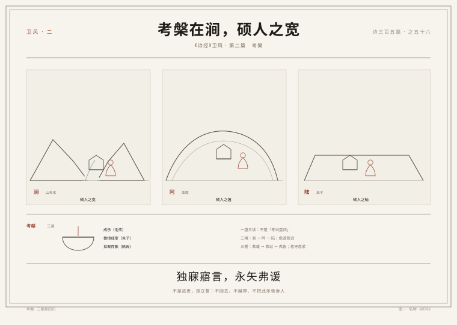
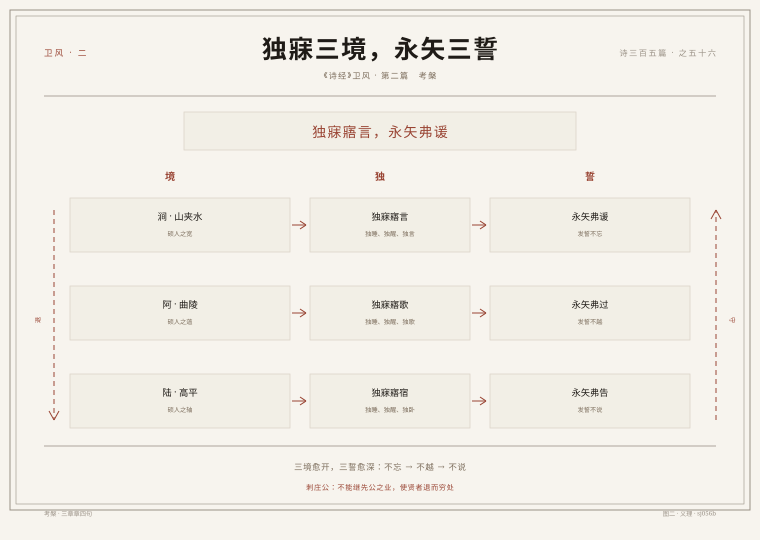

第五十六篇 考槃
卫风 · 之二 SJ056
朗读 · 普通话
依经文正文朗读，句读从文；不配乐、不改速、不加拖腔。全库同一音色（豆包 TTS），非播音员录制。
一 解题
诗三判：
- 谁在说：诗人。写贤者之状，刺庄公之失；不是贤者自述，也不必是庄公自作。
- 说什么事：贤者退处涧、阿、陆；成乐而不去；独寐独言、独歌、独宿；三誓：弗谖、弗过、弗告。
- 为何编在此：卫风第二。前篇美武公，此篇刺庄公不能继先公之业；一美一刺，卫之盛衰对见。由淇奥朝堂，转到考槃山涧。
《毛序》：「《考槃》，刺庄公也。不能继先公之业，使贤者退而穷处。」
朱子《诗集传》：「赋也。考，成也。槃，盘桓之意。言成其隐处之室也。陈氏曰：考，扣也；槃，器名。盖扣之以节歌，如鼓盆拊缶之为乐也。二说未知孰是。山夹水曰涧。硕，大；宽，广；永，长；矢，誓；谖，忘也。诗人美贤者隐处涧谷之间，而硕大宽广，无戚戚之意，虽独寐而寤言，犹自誓其不忘此乐也。」
本库的看法：这首诗的骨，不在「隐」，在「誓」。
退不是逃，是立誓：不回去、不越界、不把此乐告诉人。三章愈退愈远，三誓愈守愈紧。
二 经文
第一章
考槃在涧，硕人之宽。独寐寤言，永矢弗谖。
第二章
考槃在阿，硕人之薖。独寐寤歌，永矢弗过。
第三章
考槃在陆，硕人之轴。独寐寤宿，永矢弗告。
分章：三章，章四句。
章末韵：
- 一章：涧、宽、言、谖（元部）。
- 二章：阿、薖、歌、过（歌部）。
- 三章：陆、轴、宿、告（觉部）。
三 韵读
| 一 |
涧、宽、言、谖 |
元部（平去通） |
| 二 |
阿、薖、歌、过 |
歌部 |
| 三 |
陆、轴、宿、告 |
觉部（入声） |
一章四句一韵到底，声宽而平；二章转歌部，声开而扬；三章入觉部，声短而硬。三誓的语气，随韵收紧：弗谖尚是「不忘」，弗过已是「不越」，弗告则是「不说」。
「涧」古音可读去声；「薖」苦禾反；「轴」毛音迪，郑直六反；「告」入声。皆从《诗本音》，不标叶音。
四 字义与名物
字义
- 考槃（kǎo
pán）——毛传：考，成；槃，乐。朱子：考，成；槃，盘桓之意，成其隐处之室。陈氏：考，扣；槃，器名，扣之以节歌。三说并存。
- 涧——山夹水曰涧。
- 阿（ē）——曲陵；大陵曰阿。
- 陆——高平曰陆。
- 硕人——大人、贤者；大德之人。郑笺又谓「形貌大人」。
- 宽——毛传：宽大貌；郑笺：宽然有虚乏之色；朱子：广。
- 薖（kē）——毛传：宽大貌；郑笺：饥意；朱子：义未详，或云宽大。
- 轴——毛传：进也（读迪）；郑笺：病也；朱子：盘桓不行之意。
- 独寐——独睡。
- 寤——醒。
- 言 / 歌 / 宿——独言／独歌／独卧。
- 矢——誓。
- 谖（xuān）——忘。
- 过——越；弗过，不复入君之朝（郑），不逾此境（朱）。
- 告——告语；弗告，无所告语（毛），不复告君以善道（郑），不以此乐告人（朱）。
名物
- 涧——两山夹水；图一左侧。
- 阿——曲陵；图一中间。
- 陆——高平之地；图一右侧。
- 槃——盘皿；陈氏读为扣以节歌之器。图一右下画一盘，兼存「成乐／盘桓／扣槃」三读。
- 考槃——成乐、盘桓、扣槃；不是「考试盘问」。
- 独寐——独睡独醒；无物可指，落在一人一室。
五 今译
第一章
在山涧成其安居之乐，贤者宽厚。独睡独醒独言，永远发誓不忘。
第二章
在曲陵成其安居之乐，贤者宽大。独睡独醒独歌，永远发誓不越。
第三章
在高平成其安居之乐，贤者盘桓。独睡独醒独卧，永远发誓不告。
六 章旨
一章：涧—宽—独言—弗谖。
退到山涧，先守住「不忘」。
二章：阿—薖—独歌—弗过。
退到曲陵，再守住「不越」。
三章：陆—轴—独宿—弗告。
退到高平，最后守住「不说」。
三章合看：三境愈开，三誓愈深；从「不忘」到「不越」到「不告」，退得越远，守得越紧。
七 诗教
- 兴：此诗是赋，不是兴；但它兴起一种「退而不屈」的想象：人可以退出朝堂，不可以退出自己的守。
- 观：观贤者之守；也观庄公之失——不是失在无贤，是失在不能继业、不能用贤。
- 群：可与「退处者」同群；也可与「在位而不能用贤者」同群，后者读之当愧。
- 怨：怨在「不能继先公之业」。诗不直骂庄公，只写贤者之乐；刺在言外，所以更冷。
八 分寸与边界
- 不可把「考槃」只当隐居装修。它是「成乐」，是立身；不是换一个地方享清福。
- 不可把「硕人」当美女。此篇的硕人是贤者、大人；与《硕人》庄姜不是一人。
- 不可把「宽／薖／轴」都读成「宽大」。郑笺读饥病，朱子读盘桓；三说并存，不能一刀切。
- 不可把「独寐」当孤僻。独寐之后有言、有歌、有宿；独处是自守，不是自闭。
- 不可把「刺庄公」读成贤者怨君。诗面写贤者之乐，刺在君失；把贤者写成怨妇，便失其骨。
九 存疑
- 诗旨：毛序主刺庄公；朱子主美贤者；现代多读隐士诗。本库以毛序定编次之义，以朱子定诗面之读：美贤者，即所以刺庄公。
- 文字异文：「槃」或作「盘」；「涧」《韩诗》作「干」；「薖」《韩诗》训美貌；「过」崔读古卧反；「告」古音入声。皆音义小异。
- 名物歧解：考槃，毛传成乐，朱子成室，陈氏扣槃；宽、薖、轴，毛传宽大／宽大／进，郑笺虚乏／饥／病，朱子广／未详／盘桓；涧、阿、陆，地望无考，不必指实。
- 年代与作者：庄公约前七五七至前七三五在位；诗当作于庄公时。贤者无姓名；毛序「先公」指武公。诗是否作于庄公生前，无确证。
- 编次：卫风第二。前篇美武公，此篇刺庄公；一美一刺，盛衰对见。若从朱子读隐士诗，编次也可解为「武公之后，贤者已退」；两读不冲突。
十 跨典
- 《论语·泰伯》：「天下有道则见，无道则隐。」此篇之「隐」，不是逃世，是「无道则隐」的实践。
- 《孟子·尽心上》：「穷则独善其身，达则兼善天下。」考槃之贤者，正是「穷则独善」；但「独善」不是「独乐」，三誓仍在守道。
- 《周易·蛊》上九：「不事王侯，高尚其事。」可与「弗过」「弗告」互证：不事，不是无事；高尚，是把自己的事做高。
- 《卫风·淇奥》：前篇美武公，此篇刺庄公。武公之德一断，贤者即退；卫风由「不可谖」转入「永矢弗谖」，一美一守。
- 《卫风·硕人》：同为「硕人」，彼指庄姜，此指贤者；词同人异，不可混。
十一 双卡与图
双卡五对：
| 考槃（成乐／盘桓） |
考槃（考试盘问，误） |
| 涧（山夹水） |
涧（间隔，误） |
| 阿（曲陵） |
阿（阿谀，误） |
| 硕人（贤者） |
硕人（美女，误） |
| 永矢（发誓） |
永矢（永远丢失，误） |

图一 · 涧、阿、陆：考槃三境 名物图

图二 · 独寐三境，永矢三誓 义理图
读图三处：
- 三境：图一自左而右：涧（两山夹水）、阿（曲陵）、陆（高平）；三处各一室一人。
- 三独：图二左列「独寐寤言／歌／宿」，不是三件事，是同一人三章的自处。
- 三誓：图二右列「弗谖／弗过／弗告」，从不忘，到不越，到不说。